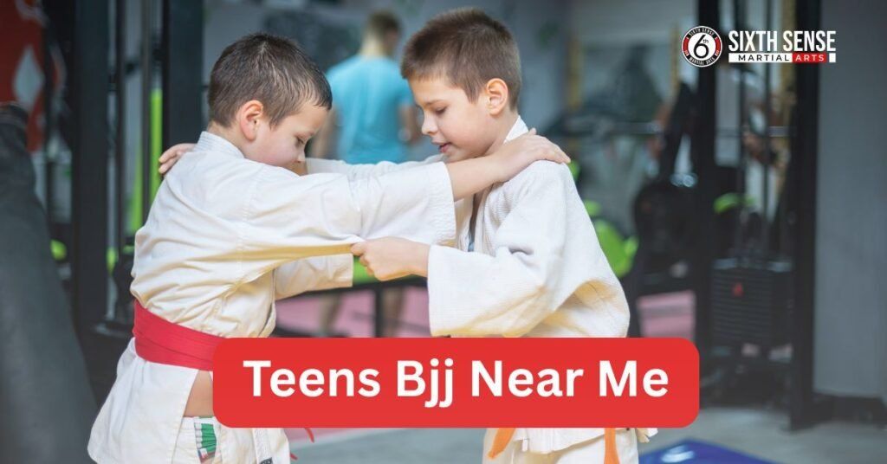
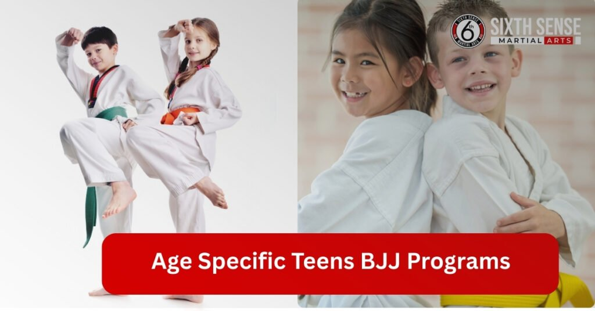
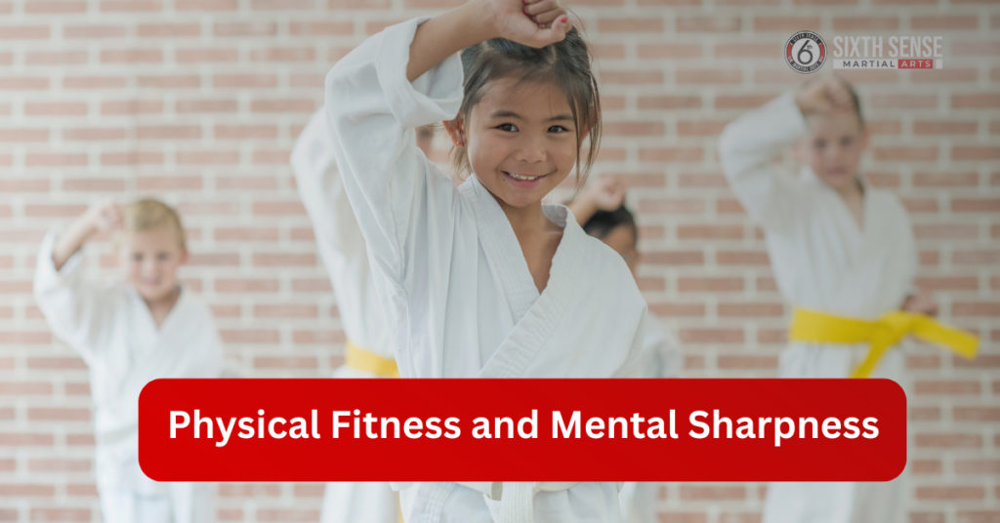

Teens BJJ Near Me at Sixth Sense MMA

Teens BJJ near me? Sixth Sense MMA in Coppell, TX, is the go to place for high quality Brazilian Jiu Jitsu training. Whether you’re in Overland Park, Olathe, or the surrounding areas, we offer expert BJJ classes that cater to teens’ specific needs. Brazilian Jiu Jitsu focuses on ground fighting techniques and submissions, making it ideal for teens who want to learn effective self defense and develop physical fitness.
Teens bjj near me at Sixth Sense MMA, we take pride in offering world class Brazilian Jiu Jitsu training. Our Gracie Barra Brazilian Jiu Jitsu certified instructors create an environment where teens can thrive, learning valuable life skills while improving their martial arts skills. Whether your teen is looking to get fit, build confidence, or learn self defense, Sixth Sense MMA provides a safe, supportive environment. If you’re searching for teens BJJ near me, there’s no better place than Sixth Sense MMA in Coppell to get started on their BJJ journey.
What is Brazilian Jiu Jitsu for Teens?
Brazilian Jiu Jitsu (BJJ) specializes in ground fighting techniques like submissions, joint locks, and grappling.It’s unique because it focuses on using technique and leverage, rather than just physical strength, making it ideal for teens. Through BJJ, teens learn how to control and submit opponents, which builds both their mental and physical fitness.
Why BJJ is Perfect for Teens
Brazilian Jiu Jitsu is ideal for teens because it teaches discipline, focus, and the importance of strategic thinking. The art encourages self control and patience, which helps teens develop confidence both in martial arts and in everyday life.
At Sixth Sense MMA, we cater to all skill levels, ensuring that each teen learns at their own pace while enjoying the physical and mental benefits of BJJ. Whether they’re looking to stay fit, learn self defense, or improve their confidence, Brazilian Jiu Jitsu is a powerful tool for personal growth.
How to Find the Best Teens BJJ Classes Near Me
When searching for teens BJJ near me, focus on finding a school that:
- Offers age appropriate classes that match your teen’s skill level.
- Has skilled instructors who are experienced in teaching teens Brazilian Jiu Jitsu.
- Emphasizes self defense and physical fitness.
- Creates a welcoming and supportive environment where teens can develop their confidence and discipline while having fun.
At Sixth Sense MMA, a distinction is made because of what is done by us:
- Offer world class Brazilian Jiu Jitsu training tailored specifically for teens.
- Have instructors with years of experience in teaching teen Brazilian Jiu Jitsu.
- Focus on creating a positive, growth oriented atmosphere.
- Help teens build confidence, strength, and self defense skills.
If you’re searching for the best BJJ classes for teens near me, Sixth Sense MMA is the ideal place to start!
Free Trial Classes at Sixth Sense MMA for Teens BJJ
At Sixth Sense MMA, we offer free trial classes for teens interested in Brazilian Jiu Jitsu. This is a great opportunity for teens to experience the training firsthand without any commitment. It allows them to get a feel for the class structure, meet our experienced instructors, and see if BJJ is the right fit for them.
Free trial classes are a valuable way to experience the quality of training at Sixth Sense MMA. Teens can try out different techniques, learn about the importance of self defense, and discover the physical and mental benefits of BJJ before making a decision. With no obligation, it’s a great way for both teens and parents to ensure that our classes meet their expectations.

Age Specific Teens BJJ Programs at Sixth Sense MMA
| Program | Age Group | Focus & Description |
|---|---|---|
| BJJ for Teens Aged 13 15 | 13 15 years old | Designed for older teens to develop advanced BJJ techniques, self defense skills, and physical strength. Focuses on teamwork, discipline, and mental resilience. |
| Classes for Younger Teens (7 12) | 7 12 years old | Introductory BJJ classes focused on building basic skills and understanding martial arts values. Fun drills and engaging activities to prepare for advanced training. |
What Makes Sixth Sense MMA’s Teens BJJ Program Unique?
At Sixth Sense MMA, we strike the perfect balance between discipline and fun in our teens BJJ program. Our instructors ensure that while teens learn the importance of focus and respect, they also enjoy the process through engaging drills and activities. This helps maintain a fun and motivating atmosphere, making it easier for teens to stay committed.
We also keep our class sizes small to ensure that each teen receives personal attention. Smaller classes allow instructors to focus on individual progress, offering more tailored guidance to help teens improve their BJJ skills effectively.Every student is ensured to feel supported and valued by this personalized approach.
Why Brazilian Jiu Jitsu is the Best Martial Art for Teens Near Me
Self defense and physical fitness are combined in Brazilian Jiu Jitsu, making it one of the most effective martial arts for teens. Unlike traditional striking arts, BJJ focuses on leverage, technique, and control, which makes it suitable for teens of all sizes.
By learning ground fighting techniques and submissions, teens gain the skills needed to defend themselves in real world situations. Along with self defense, BJJ provides excellent physical conditioning, improving strength, flexibility, and endurance.
How BJJ Compares to Other Martial Arts
| Aspect | Brazilian Jiu Jitsu (BJJ) | Other Martial Arts (e.g., Muay Thai, Boxing) |
|---|---|---|
| Focus | Emphasis on practical techniques, leverage, and submission. | Focus on power and striking techniques. |
| Technique vs Power | The technique to defeat larger opponents is taught by BJJ. | Relies on physical power and striking techniques to overpower opponents. |
| Ideal for Teens | Perfect for teens to develop mental and physical abilities in a safe, controlled environment. | Focuses more on power, may be less suited for teens in terms of balance and technique. |
| Learning Environment | Teaches mental resilience and strategic thinking, along with physical fitness. | Primarily focuses on physical strength and speed. |
| Best Fit for Teens | Sixth Sense MMA offers the ideal platform to learn and perfect these techniques effectively. | May require more focus on power, less on strategic defense for teens. |
Why Choose Sixth Sense MMA for Teens BJJ Near Me?
Sixth Sense MMA is the go to choice for teens BJJ near me, offering top notch Brazilian Jiu Jitsu training in Coppell, TX, and nearby areas like Overland Park and Olathe. Our BJJ classes for teens are designed to build confidence, strength, and self defense skills while keeping the experience fun and engaging.
Whether your teen is just starting or looking to refine their skills, Sixth Sense MMA provides a supportive and safe environment to grow as a martial artist.
Expert Trainers and Proven Results
Our expert trainers at Sixth Sense MMA bring years of experience in teaching Brazilian Jiu Jitsu to teens. With certifications from Gracie Barra Brazilian Jiu Jitsu, our instructors know exactly how to connect with younger students and bring out their best.
Our proven results show how teens develop discipline, focus, and physical fitness while learning self defense techniques that can last a lifetime. Sixth Sense MMA is a trusted academy for anyone looking for BJJ training for teens.
Benefits of Brazilian Jiu Jitsu for teens are offered at Sixth Sense MMA
Self Defense Skills
BJJ is an effective way for teens to learn self defense. The techniques focus on using leverage and technique rather than strength, which helps teens defend themselves against larger opponents.
Physical Fitness and Mental Sharpness
Through BJJ, teens improve physical fitness and mental sharpness. The training boosts endurance, strength, and flexibility while enhancing concentration and problem solving abilities on the mat.

Building Confidence and Discipline
BJJ helps teens develop confidence and discipline. As they progress through the belts, they build self assurance in their abilities, learning to set goals and work hard to achieve them.
Building Leadership Skills
As teens master BJJ, they also develop leadership skills. By helping others in class and taking on leadership roles, teens build important qualities that extend beyond the mat.
Fostering Mental Resilience
BJJ prepares teens to face challenges and setbacks. The discipline teaches them to stay focused and resilient, which helps them handle adversity both in and out of the gym.
Customer Reviews:
Muntasir Zaman
“Great gym! Came in for a session today and loved the environment and instruction. The head coach Matheus really paid attention to small details and made sure to give everyone adequate time and focus. Excited to come back!”
Ameera Abbasi
“I had gone for a free trial session and it was so fun. The instructor taught us very well, especially for this being our first time. It was a good workout and I definitely want to come back regularly!”
FunDadMo
“Great hidden jiu jitsu gym for all ages, perfect for learning Self-defense techniques.” The teacher is great and really knows the art.”
Ben Holland
“So excited to have a jiu jitsu gym in our neighborhood! This is what Coppell needed!”
Thiago Prado specializes in teaching effective martial arts for Self-defense.
“I already trained with Coach Matheus when he was an instructor in Brazil and he is a great teacher for all ages. Without a doubt, if I had the opportunity I would go to the US to train with him again.”
Sana Haq
“My kids love their classes. Professional and friendly instructors ensure you learn effective martial arts for Self-defense. Clean and well lit space.”
Noor Ghaffar
“I’m so happy to see a good mix of guys and girls at the gym. The pricing isn’t too bad.”
Sagar deep singh
“Coach is super awesome. Soft and tough at the same time with kids.”
Shiraz
“Huge facility and very welcoming coach. Great group of people to train with.”
Adnan Sheriff
“A very clean and organized facility with highly skilled coaches who create a friendly environment for all levels.”
Mohammed Shaazuddin
“Friendly staff and coach with a great atmosphere of learning and support.”
Get Started Today
Enroll for a Free Trial Class
Getting started at Sixth Sense MMA is easy! Parents can sign their teens up for a free trial class to experience Brazilian Jiu Jitsu firsthand. This no obligation trial allows teens to explore the basics of BJJ, meet our experienced instructors, and get a feel for the training environment. Signing up is simple, and our team is ready to help your teen begin their BJJ journey.
Start Your Teen’s Martial Arts Journey
Encourage your teen to take the first step in their martial arts journey by joining Sixth Sense MMA. Whether they’re new to BJJ or looking to refine their skills, our supportive environment helps teens grow both physically and mentally. BJJ is a great way for teens to build confidence, discipline, and self defense skills while having fun. Take that first step today and watch your teen thrive at Sixth Sense MMA.
Conclusion
Brazilian Jiu Jitsu (BJJ) is one of the best martial arts for teens because it focuses on self defense, physical fitness, and mental resilience. At Sixth Sense MMA, we offer world class Brazilian Jiu Jitsu training tailored specifically for teens, ensuring a safe, supportive environment where your teen can develop confidence, discipline, and valuable life skills.
Whether your teen is new to martial arts or looking to improve their BJJ skills, Sixth Sense MMA stands out as the ideal place to start their BJJ journey. With expert instructors, age appropriate BJJ classes, and a focus on building self defense skills, our program helps teens grow both physically and mentally. If you’re looking for the best BJJ classes for teens near me, Sixth Sense MMA provides a unique opportunity to train under skilled instructors and gain lasting benefits from Brazilian Jiu Jitsu.
Follow Us on Social Media
Stay connected with Sixth Sense MMA through our social media channels. Follow us for class updates, training tips, and a closer look at our self defense community.
FAQ’s
Brazilian Jiu Jitsu is a martial art focused on ground fighting, submissions, and leverage-based techniques, helping teens build strength, self defense, and confidence.
We offer BJJ classes for ages 7–12 (introductory level) and 13–15 (advanced level), tailored to each age group’s needs.
No experience is required. Classes are designed for all levels, from beginners to more advanced students.
Teens learn practical techniques like escapes, grappling, and submissions, enabling them to defend against larger opponents using leverage, not strength.
We keep class sizes small, focus on personal progress, and balance discipline with fun through engaging drills and activities.
Train with us in Coppell
The first class is free. Shorts, a t-shirt and a water bottle. We lend the rest.
Book a free class